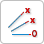
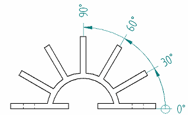

Ordinate dimensions
You can use the coordinate dimension commands to place ordinate dimensions, which measure the distance from a common origin to one or more keypoints or elements.
In Solid Edge, "ordinate dimensions" are labeled and referred to as "coordinate dimensions."
Choosing a coordinate dimension command
There are several commands that place and modify coordinate dimensions.
|
Use this |
To |
|
Automatic Coordinate Dimension command
|
Place all linear coordinate dimensions at once. You can select a drawing view or drag a box to select 2D geometry. You can use this command to place coordinate dimensions between two drawing views.
|
|
|
Place linear coordinate dimensions manually, one at a time. You can place coordinate dimensions in any order and on either side of the origin.
|
|
Angular Coordinate Dimension command  |
Place a dimension that measures the angle between a center point, axis, and measurement point.  |
|
Change Coordinate Origin command
|
Swap the current common origin (0) dimension in the dimension group with a different dimension in the dimension group. |


Manipulating coordinate dimensions
You can adjust the position of coordinate dimensions altogether based on their membership in an alignment set. You also can adjust the position of one or more individual dimensions by first removing them from an alignment set, or by splitting or dissolving an alignment set.
For more information, see Coordinate dimension alignment sets.
Deleting coordinate dimensions
You can delete all of the dimensions that reference the same origin by selecting the origin dimension and pressing Delete. You also can delete individual measurement dimensions by selecting them and pressing Delete.
Coordinate dimension formatting options
Coordinate dimensions have a unique set of formatting options. For example, you can:
-
Change the origin symbol.
-
Hide the origin label.
-
Specify the orientation of the text to the dimension line.
-
Show negative values to the left of the origin.
The options are available in the Coordinate section of the Lines and Coordinate tab (Dimension Style and Dimension Properties). You can specify these in the Dimension style, so that they are applied automatically. Otherwise, you can modify the properties of a selected dimension.
How do I
Place coordinate dimensions automaticallyPlace a coordinate dimension
Place a coordinate dimension using a coordinate system
Place an angular coordinate dimension
Place coordinate dimensions between drawing views
Change the origin dimension in a coordinate dimension group
Change the coordinate origin value
Learn more
Coordinate dimension alignment setsAdding and removing jogs on coordinate dimensions
Look up more details
Dimension command barCoordinate dimension handles
Automatic Coordinate Dimension command
Automatic Coordinate Dimension command bar
Keypoint Options dialog box
Coordinate Dimension command
Angular Coordinate Dimension command
Change Coordinate Origin command
Lines and Coordinate tab (Dimension Style and Dimension Properties)